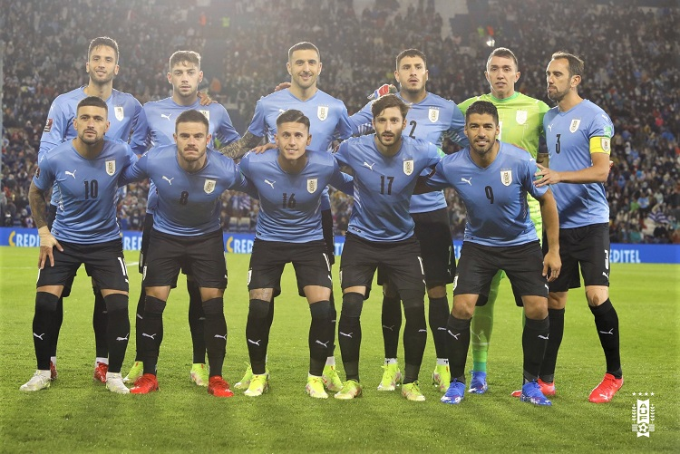

COPAS QUE JÁ PARTICIPOU:
Até a Copa do Mundo de 2018, o Uruguai já havia se classificado para 13 edições da Copa do Mundo (1930, 1950, 1954, 1962, 1966, 1970, 1974, 1986, 1990, 2002, 2010, 2014 e 2018), o que faz dela a terceira Seleção da América do Sul com mais participações em Copas do Mundo, atrás somente do Brasil e da Argentina. Em 2022 Fará sua 14° participação que será no Catar/Qatar

PREMIAÇÕES QUE JÁ ALCANÇOU
2 títulos de Copa do Mundo (1930 e 1950).
NOME DO TÉCNICO:
Diego Alonso
PRINCIPAIS JOGADORES
Cavani
Suárez
Arrascaeta
Tabela de jogos
| Data/Hora | Estádio | Adversário |
|---|---|---|
| 24 nov 2022 / 16h00 | Estádio da Cidade da Educação | Coreia do Sul |
| 28 nov 2022 / 22h00 | Estádio Nacional Lusail | Portugal |
| 2 dez 2022 / 18h00 | Estádio Al Janoub | Gana |